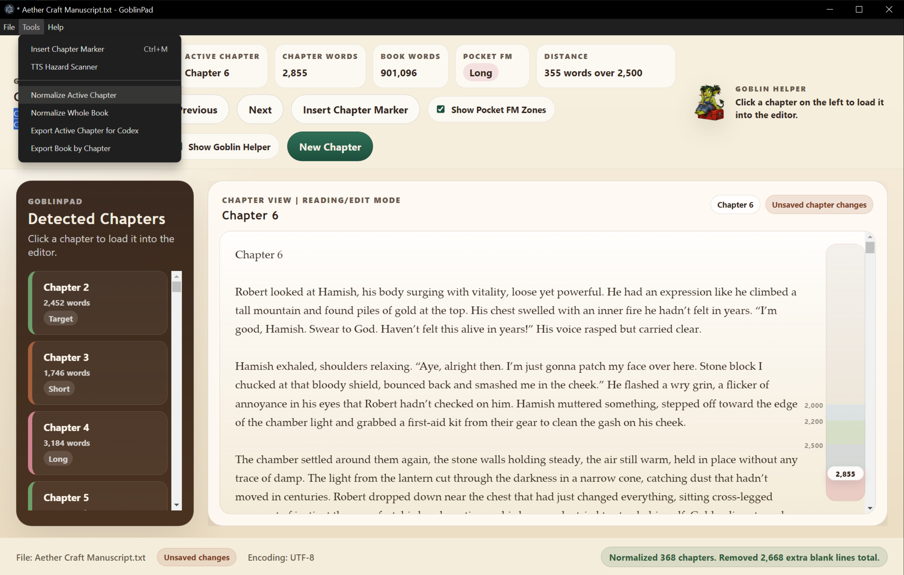
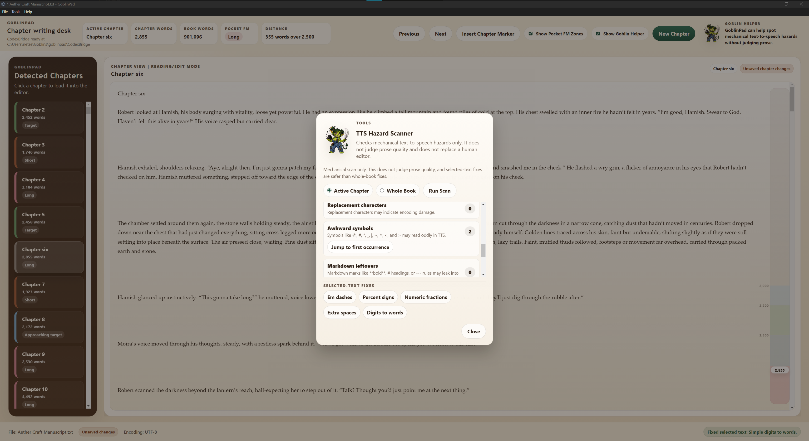

Chapter View for huge manuscripts
Move through long stories without wrestling one oversized document.
Freeware for serialized fiction writers
A private chapter-writing desk for serialized fiction writers.
GoblinPad helps writers manage long manuscripts, split chapters, track word targets, clean text-to-speech hazards, export chapters, and keep writing without fighting a giant document.

Download
The installer is hosted through GitHub Releases.
Install note
GoblinPad is unsigned freeware. Windows may show a warning during installation. Only download GoblinPad from this official page or the linked GitHub release.
Features
Move through long stories without wrestling one oversized document.
Add chapter breaks and keep drafts structured while writing.
Track chapter length against serialized-fiction target ranges.
Find text-to-speech risks before they trip up audio delivery.
Clean problem text with a snapshot safety net before bulk changes.
Catch mistakes while preserving your names, terms, and invented words.
Export focused chapter files when you are ready to review or share.
Send bug reports or confusing-tool notes directly from the app or by email.
Privacy and safety
GoblinPad works locally on your computer.
It does not send manuscripts anywhere.
Feedback emails never include manuscript text automatically.
Fix All creates snapshots before bulk changes.
Screenshots
Work inside one focused chapter view with navigation, word targets, and progress readouts nearby.

Scan active chapters or whole books for mechanical text-to-speech risks before audio review.
Support
GoblinPad is freeware. Donations support maintenance and future writer-tool polish.
Feedback
Found a bug or confusing tool? Use Send Feedback inside the app, or email directly.
Story promotion
GoblinPad was built by Samburjack while writing Aether Craft, a serialized fantasy story on Pocket FM.